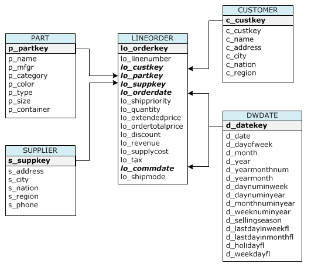

Introduction
Learning Objectives
This project will encompass the following learning objectives:
- Compare the design of Online Transaction Processing (OLTP) with Online Analytic Processing (OLAP) systems and the role of OLAP in Business Intelligence systems.
- Analyze the advantages and disadvantages of using the MapReduce programming model for data warehousing by running a typical Business Intelligence query using Hive.
- Compare the differences between traditional row stores and distributed columnar stores by implementing optimizations in column stores for Business Intelligence queries.
- Design an optimized table structure with sort keys and distribution keys for leveraging parallel processing in massively parallel systems like Redshift.
Data Warehouses
A data warehouse is a copy of transaction data specifically structured for querying and reporting. Decision Support Systems (DSS) help organizations in strategic and operational decision making processes. Strategic decision making requires historical data. Data Warehouses(DW) are large storage systems which store historical data that can be used for strategic decision making.
Day to day business operations (transactions) which require high throughput typically use OLTP (Online Transaction Processing) systems whereas for business intelligence systems (data warehouse) OLAP (Online Analytical Processing) is used. The following section gives more details on OLTP and OLAP.
OLTP vs OLAP
An OLTP (Online Transaction Processing) System deals with operational data, which is, data involved in the operation of a particular system.
OLTP is characterized by a large number of short online transactions (INSERT, UPDATE, DELETE). In an OLTP system data are frequently updated and queried. So a fast response to a request is required. Since OLTP systems involve a large number of update queries, the database tables are optimized for write operations.
To prevent data redundancy and to prevent update anomalies the database tables are normalized. The process of organizing the attributes of a table in a relational database is called normalization. Normalization makes the write operation in the database tables more efficient because the total data written to disk on a transaction is reduced. The set of tables that are normalized are also fragmented. The fragmentation of tables makes reading large amount of data for complex queries inefficient as data from same table is stored together and reading from across different tables incurs heavy disk latency.
Operational data are usually of local relevance. It involves queries accessing individual tuples (an individual record). These types of queries are termed as point queries.
Example OLTP query: What is the Salary of Mr.John?
OLAP (Online Analytical Processing) deals with historical data or archival data. Historical data are those data that are archived over a long period of time. Data from OLTP are collected over a period of time and stored in a very large database called a Data Warehouse. Data warehouses are highly optimized for read (SELECT) operation.
OLAP queries are of analytical form, meaning that they need to access a large amount of data and require many aggregations. It accesses a large number of records from database tables and performs filtering and aggregations on the required columns.
Updates are very rare in a Data warehouse. OLAP queries enable strategic decision making through enabling the analysis of historical data.
An example OLAP query: How is the profit changing over the last several months across different regions?
Figure 1: Feedback loop in a Business Intelligence system
The Scenario
Carnegie Records(CR) has become very successful with sales in more than a 100 countries and half a billion customers worldwide. They would like to expand their business even further and for that reason, they want to analyze their historical sales data which has several hundred million records. Since you have been very successful at your job of scaling and maintaining their transaction processing system, they have asked you to develop their analytics and reporting workflow using the latest technologies available in the market today.
Since this is the first time Carnegie Records is building an analytics and reporting framework for their decision support system the CTO of CR has asked you to benchmark multiple Business Intelligence (BI) tools so that they use the best system available for their workload. The BI tool will help them make strategic decisions for historical sales data. The executive team from CR wants answers to questions like,
- What is the increase in revenue if discounts are reduced for a given time period
- What is the revenue from a certain product for a certain region
Using the insights gained from the historical data captured from their transaction processing system, CR hopes to improve its business. This will be accomplished by taking well informed strategic decisions for various aspects of their business, such as promoting certain products in certain regions, applying discounts to products etc. Figure 1 shows the feedback loop that portrays businesses using Business Intelligence systems.
After a literature survey, you have decided to use the Star Schema Benchmark (SSB). The SSB is designed to measure the performance of database products with respect to data-warehousing workloads like reporting and analytics. The design principles and query design of the star schema benchmark are explained in the next section.
Figure 2: Project 3.4 Task Overview
You will be doing the following tasks in this project,
- Provision a MySQL instance with the star schema benchmark data-set and benchmark the performance of query1 in ssb. This task will help you analyze the design of a typical row-store OLTP system.
- Provision a Hive (EMR) Cluster. Create an external table in Hive that reads from S3 and benchmark the performance of query1 in ssb. This task will help you analyze the advantages and disadvantages of using MapReduce programming model for data warehousing workloads.
- Provision a Redshift cluster, load ssb data-set to structured (relational) tables and benchmark queries 1, 2 and 3 in ssb. This task will help you compare the performance of a traditional row store OLTP system (MySQL) with a distributed columnar store (Redshift).
- Optimize the table structure in Redshift using sort keys and dist keys in order to improve the performance of the ssb queries by leveraging the parallel execution and columnar compression in distributed columnar stores.
The MySQL instance, Hive Cluster and the Redshift Cluster are the backend in the context of this project.
The following section will give a brief introduction to the SSB benchmark schema design and the queries of the benchmark. This will be followed by an introduction to MySQL, Hive and Redshift as well as their design principles. Finally we will go through the detailed steps for the tasks mentioned above.
Resource Tagging and AMIs
For this project, assign the tag with Key: Project and Value: 3.4 for all EC2, EMR and Redshift resources
| Type | AMI | Cluster / Instance Type |
|---|---|---|
| Runner instance | ami-c68ea0ae | m1.small |
| MySQL instance | ami-407a5528 | m3.xlarge |
| Hive Cluster | NA | 1 master: m1.large 2 core: m3.xlarge |
| Redshift Cluster | NA | 2 node dw2.large cluster |
Caution
Some of the services including the MySQL instance, Hive cluster and Redshift cluster that you will be using for this project are expensive when left running. Please plan ahead and pay special attention to the instructions and tasks before provisioning any resources.
The Star Schema Benchmark Schema Design
Data warehouse databases commonly use a star schema design. The star schema is the simplest data warehouse schema, so called because it’s representation resembles a star, with points radiating from a center. The center of the star consists of one or more fact tables and the points of the star are the dimension tables.
A star schema is characterized by one or more very large fact tables that contain the primary information in the data warehouse and a number of much smaller dimension tables (or lookup tables), each of which contains information about the entries for a particular attribute in the fact table.
A fact table is at the center of a star schema. It has quantitative information about a business process that needs to analyzed. For example, a fact table may contain a record for a sales transaction. The record contains details such as sales lo_quantity, lo_revenue, lo_orderdate, lo_custkey etc. In the above example the data that needs to be analyzed is lo_quantity and lo_revenue. The lo_orderdate and the lo_custkey are foreign keys to dimension tables. The dimension tables store information about ways in which the fact table can be analyzed. For instance, the lo_orderdate can be used to filter information from the fact table to calculate the revenue from a particular month.
The following figure shows the SSB data model we will be using for the benchmark.
Figure 3: The SSB data model
A star query is a join between a fact table and a number of lookup tables. Each lookup table is joined to the fact table using a primary-key to foreign-key join, but the lookup tables are not joined to each other.
Definition
A primary key, also called a primary keyword, is a key in a relational database that is unique for each record. It is a unique identifier, such as a driver license number, telephone number (including area code), or vehicle identification number (VIN). A relational database must always have one and only one primary key.
A foreign key is a field (or collection of fields) in one table that uniquely identifies a row of another table. The foreign key in one table (referencing table) matches the primary key column of another table (referenced table). The foreign key can be used to cross-reference tables.
A star join is a primary-key to foreign-key join of the dimension tables to a fact table. All of the dimension tables have a primary key. The central fact table has a foreign key mapping to the dimension tables’ primary key. A star join selects rows from the central fact table for aggregation based on a restriction (filtering condition) on the dimension tables.
The main advantages of star schemas are that they:
- Provide a direct and intuitive mapping between the business entities being analyzed by end users and the schema design. In an OLTP system, the tables are highly normalized. Normalization of tables is done to reduce data redundancy for efficient writes. The normalization of tables lead to more complex relationship between the entities (tables) in the database. A star schema reduces this complex relationship by flattening the relationship between tables by having more redundant data in the tables.
- Provides highly optimized performance for typical data warehouse queries. This is because, the central fact table has significantly more number of rows than the dimension tables to which it is being joined. This enables hash joins between the fact table and the smaller dimension table. In a hash join, the central fact table is processed row-by-row, looking up the matching values from the in-memory hash tables of the smaller dimension tables.
The main disadvantage of the star schema is that data integrity is not enforced as well as it is in a highly normalized database. One-off inserts and updates can result in data anomalies which normalized schemas are designed to avoid. Generally speaking, star schemas are loaded in a highly controlled fashion via batch processing or near-real time "trickle feeds", to compensate for the lack of protection afforded by normalization.
The following queries are part of the SSB benchmark. They capture a typical analytic query that will be performed in a data warehouse system. You will be running Query1 on MySQL, Hive and Redshift to asses the performance of each system for a typical data warehouse query. You will use Query 2 and Query 3 to asses the performance optimizations in Redshift possible due to its columnar and distributed storage.
Query1: The first query in the benchmark will have a restriction (filtering condition) on only one dimension. This is a "what if" query to find possible revenue increases. The query is meant to quantify the amount of revenue increase that would have resulted from eliminating certain company-wide discounts in a given percentage range for products shipped in a given year.
select sum(lo_extendedprice*lo_discount) as revenue from lineorder, dwdate where lo_orderdate=d_datekey and d_year=1997 and lo_discount between 1 and 3 and lo_quantity < 24;
Query2: The second query will have restrictions on two dimensions. Our query will compare revenue for some product classes, for suppliers in a certain region, grouped by more restrictive product classes and all years of order.
select sum(lo_revenue), d_year, p_brand1 from lineorder, dwdate, part, supplier where lo_orderdate = d_datekey and lo_partkey = p_partkey and lo_suppkey = s_suppkey and p_category = 'MFGR#12' and s_region = 'AMERICA' group by d_year, p_brand1 order by d_year, p_brand1;
Query3: The third query will have restrictions on three dimensions, including the remaining dimension, customer. The query is intended to provide revenue volume for lineorder transactions by customer nation and supplier nation and year within a given region, in a certain time period.
select c_city, s_city, d_year, sum(lo_revenue) as revenue from customer, lineorder, supplier, dwdate where lo_custkey = c_custkey and lo_suppkey = s_suppkey and lo_orderdate = d_datekey and (c_city='UNITED KI1' or c_city='UNITED KI5') and (s_city='UNITED KI1' or s_city='UNITED KI5') and d_yearmonth = 'Dec1997' group by c_city, s_city, d_year order by d_year asc, revenue desc;
Introduction to MySQL, Hive and Redshift
MySQL
As we have seen before MySQL is an open source row-store database. It is typically used for Online Transaction processing (OLTP) systems mainly because for OLTP systems, tuples are arranged in rows which are stored in blocks. The blocks reside on disk and are cached in main memory in the database server. This improves transaction latency in OLTP systems.
Figure 4: Block level storage of rows in a row-store
In a typical relational database table, each row contains field values for a single record. In row-wise database storage, data blocks store values sequentially for each consecutive column making up the entire row. If block size is smaller than the size of a record, storage for an entire record may take more than one block. If block size is larger than the size of a record, storage for an entire record may take less than one block, resulting in an inefficient use of disk space. In online transaction processing (OLTP) applications, most transactions involve frequently reading and writing all of the values for entire records, typically one record or a small number of records at a time. As a result, row-wise storage is optimal for OLTP databases.
Hive
The Apache Hive data warehouse software facilitates querying and managing large datasets residing in distributed storage (HDFS). Hive provides a mechanism to project structure onto this data and query the data using a SQL-like language called HiveQL. Programmers are also given the ability to plugin custom Mappers and Reducers to analyze data when such a solution is more efficient or it is not possible to automatically project structure onto the data in the distributed storage.
Hive is not designed for OLTP workloads and does not offer real-time queries or row-level updates. It is best used for batch jobs over large sets of append-only data (like web logs). The most important characteristics of Hive are:
- Scalability (scale out with more machines added dynamically to the Hadoop cluster).
- Extensibility (with MapReduce framework).
- fault-tolerance (provided by HDFS).
- loose-coupling with its input formats (using SerDe (Serializer/Desirializer) explained below).
The following figure gives a high level overview of Hive and its relationship with HDFS.
Figure 5: Hive Architecture
The Hive server has a SQL parser, planner, executor and optimizer that will transform the SQL query to a MapReduce job that runs using the HDFS file system. The Hive metastore service stores the metadata for Hive tables and partitions in a relational database, and provides clients (including Hive) access to this information via the metastore service API. The metadata which metastore stores contains things like IDs of Database, IDs of Tables, IDs of Index, The time of creation of an Index, The time of creation of a Table, IDs of roles assigned to a particular user, InputFormat used for a Table OutputFormat used for a Table etc.
HCatalog is a table and storage management layer for Hadoop that enables users with different data processing tools — Pig, MapReduce — to more easily read and write data on the grid. HCatalog’s table abstraction presents users with a relational view of data in the Hadoop Distributed File System (HDFS) and ensures that users need not worry about where or in what format their data is stored — RCFile format, text files, SequenceFiles, or ORC files.
Figure 6: The HCatalog layer
HCatalog supports reading and writing files in any format for which a SerDe (serializer-deserializer) can be written. By default, HCatalog supports RCFile, CSV, JSON, and SequenceFile, and ORC file formats. To use a custom format, you must provide the InputFormat, OutputFormat, and SerDe.
Redshift
An Amazon Redshift data warehouse is an enterprise-class relational database query and management system. Redshift is a cloud service that is offered by Amazon AWS. It is fully managed by AWS and it runs on top of EC2 with optimizations such as locally attached storage, high bandwidth interconnect across compute nodes etc. Redshift claims to support peta-byte scale data warehouse by increasing the number of compute nodes in the cluster.
The following figure and sections give a high level overview of Redshift’s architecture and components.
Figure 7: Redshift Data Warehouse architecture
Leader node
The leader node manages communications with client programs and all communication with compute nodes. It parses and develops execution plans to carry out database operations. An execution plan is the series of steps necessary to obtain results for a complex query. Based on the execution plan, the leader node compiles code, distributes the compiled code to the compute nodes, and assigns a portion of the data to each compute node.
Compute nodes
The leader node compiles code for individual elements of the execution plan and assigns the code to individual compute nodes. The compute nodes execute the compiled code send intermediate results back to the leader node for final aggregation. Each compute node has its own dedicated CPU, memory, and attached disk storage, which are determined by the node type.
Node slices
A compute node is partitioned into slices; one slice for each core of the node's multi-core processor. Each slice is allocated a portion of the node's memory and disk space, where it processes a portion of the workload assigned to the node. The leader node manages distributing data to the slices and assigns the workload for any queries or other database operations to the slices. The slices then work in parallel to complete the operation.
When you create a table, you can optionally specify one column as the distribution key. When the table is loaded with data, the rows are distributed to the node slices according to the distribution key that is defined for a table. Choosing a good distribution key enables Amazon Redshift to use parallel processing to load data and execute queries efficiently.
Using columnar storage, each data block stores values of a single column for multiple rows.
Figure 8: Block level storage of columns in column store
Using columnar storage, each data block holds column field values for as many as three times as many records as row-based storage. This means that reading the same number of column field values for the same number of records requires a third of the I/O operations compared to row-wise storage. Since each block holds the same type of data, block data can use a compression scheme selected specifically for the column data type, further reducing disk space and I/O.
The savings in space for storing data on disk also carries over to retrieving and then storing that data in memory. Since many database operations only need to access or operate on one or a small number of columns at a time, you can save memory space by only retrieving blocks for columns you actually need for a query. Where OLTP transactions typically involve most or all of the columns in a row for a small number of records, data warehouse queries commonly read only a few columns for a very large number of rows. This means that reading the same number of column field values for the same number of rows requires a fraction of the I/O operations and uses a fraction of the memory that would be required for processing row-wise blocks.
Benchmarking
In order to run the sql queries on the backend instance, we have provided you with a runner program and SQL script. The details of the SQL script and the runner program are given below.
The “project3_4.sql” script
This is a SQL script that can be found in the runner instance AMI (ami-c68ea0ae) at the path /home/ubuntu/Project3_4/project3_4.sql. The runner program will read SQL commands from this script and run it in the specified backend (MySQL/Hive/Redshift).
The script is divided into multiple sections. Each section can have multiple SQL commands delimited by ;.
Each section is identified by the following start and end comments:
-- start section_name sql commands delimited with ; -- end section_name
Note
Do not remove any existing sections and commands from the project3_4.sql script as the auto-grader relies on the section names to report scores to the auto grader. You may modify the section redshift_create_table_optimized to select the sort and dist keys. You may add additional sections for your own curiosity.
The Runner program
The Runner program is located at /home/ubuntu/Project3_4/Runner.jar. You can use the runner program to run the required section from the project3_4.sql on the specified backend (MySQL/Hive/Redshift).
The Runner program has to be configured using the config.properties file located at /home/ubuntu/Project3_4/.
The config.properties file has the following structure.
REDSHIFT_JDBC_URL= redshift jdbc endpoint REDSHIFT_USERNAME= username REDSHIFT_PASSWORD= password MYSQL_JDBC_URL=jdbc:mysql://MySQL instance DNS:3306/ssb MYSQL_USERNAME=root MYSQL_PASSWORD=db15319root HIVE_JDBC_URL=jdbc:hive2://Hive(EMR) cluster master DNS:10000
The Runner program can be run as follows,
Usage: java -jar Runner.jar <backend> <section_name>
backend : “mysql” or “hive” or “redshift”
section_name : section name to run from the project3_4.sql
Note
You will be graded for this project only if you run the benchmark queries on all three databases using the runner script.
Caution
Do not run multiple processes of the Runner program from the same instance at the same time. If you would like to work in parallel please start a new Runner instance.
The MySQL Task is designed to help you compare row-store based OLTP systems with distributed column-store based OLAP systems. The Hive Task helps you analyze the advantages and disadvantages of using MapReduce programming for data warehousing workloads. The Redshift task is designed to help you explore the advantages of distributed columnar storage for OLAP workloads and optimization techniques available in distributed column-store using sort keys and dist keys.
MySQL Task
We will now benchmark the performance of ssb query1 in a MySQL instance. For this task, we will be launching an ami (ami-407a5528) on a m3.xlarge instance. This instance has the ssb dataset loaded and indexed.
Note
The following credentials are used to access the database
username: root
password: db15319root
database: ssb
Make sure that the instance’s security group allows traffic to port 3306 for the JDBC connection
Steps
To run the benchmark for this experiment, perform the following steps:
- Update the
config.propertiesfile in/home/ubuntu/Project3_4/with the correct DNS, username, password and DNS name before running the runner script. - Login to the instance and the MySQL shell.
- Determine the total size (Data_length) occupied by all tables in the ssb database.
- Determine the cardinality of indexes created on the tables
lineorderanddwdate. - Determine the buffer pool size allocated for MySQL.
- Run the explain command on the ssb query1. Determine the indexes that are being used in the query
- Run ssb query1 on MySQL using the Runner in the Runner instance. Execute section
query1fromproject3_4.sqlfor dbType MySQL. Run the query twice one after another. Do you notice a difference?
Caution
The query takes a significant amount of time to run. Please be patient. Please use either byobu or screen utilities to protect your Runner process from terminating. If your Runner process terminates before the query runs, the scores will not be reported to the auto-grading server
Hive Task
Steps
Launch a EMR cluster with Hive
We will now benchmark the performance of ssb-query1 on a Hive cluster to analyze the advantages and disadvantages of MapReduce for data warehousing. For this task we will be using a 1 master 2 core EMR cluster with Hive application installed. The following is the configuration you will be using for the EMR cluster.
Cluster Name: EMR Cluster Name Termination Protection: Yes Tags: Key: Project Value: 3.4 AMI Version: 3.5.0 Applications to be installed: Hive 0.13.1 Hardware Configuration: Master m1.large 1 and Core m3.xlarge 2 Ec2 Keypair: your ec2 key pair
Make sure that the cluster's security group allows traffic to port 10000 for the JDBC connection
- Once the Cluster is running, use the master instance’s DNS in the jdbc endpoint for the runner program. You can set the value in
config.propertiesfile. - Execute the
hive_create_tablesection inproject3_4.sqlusing the runner program. - Execute the
query1section inproject3_4.sqlusing the runner program
Note
The data for the ssb dataset is located at s3://15619s15p34/ssbgz/. The Hive queries will automatically fetch data from this location to run the MapReduce job.
Redshift Task
Launch a Redshift Cluster
For this task, we will be launching a multi-node redshift cluster with 1 leader (provided for free) and 2 compute nodes (dw2.large @$0.25/hr). Please follow the steps below for launching the cluster.
- Sign in to the AWS Management Console and open the Amazon Redshift console at here.
- In the left navigation pane, click Clusters and then click Launch Cluster.
- On the Cluster Details page, enter the following values and then click Continue:
- Cluster Identifier: Type an identifier of your choice. (example: ssb-benchmark)
- Database Name: Type a database name of your choice. (example: ssb)
- Database Port: Leave the port number to the default value. Make sure that the security group you select in the subsequent step allows traffic on this port
- Master User Name: Type a master user name of your choice. You will use this username and password to connect to your database after the cluster is available.
- Master User Password and Confirm Password: Type a password for the master user account. Make sure you remember the user name and password. You will use these values to establish a JDBC connection to the redshift cluster.
- On the Node Configuration page, select the following values and click continue
- Node Type: dw2.large
- Cluster Type: Multi Node
- Number of Compute Nodes: 2
- On the Additional Configuration page
- Cluster Parameter Group: select the default parameter group.
- Encrypt Database: None
- Choose a VPC: Default VPC (vpc-xxxxxxxx)
- Cluster Subnet Group: default
- Publicly Accessible: Yes
- Choose a Public IP Address: No
- Availability Zone: No Preference
- VPC Security Groups: Select a security group that allows traffic on the database port you selected in step 3
- Create CloudWatch Alarm: No
- On the Review page, review the selections that you have made and then click Launch Cluster
screenshot 1
- On the Clusters page, click the cluster that you just launched and review the Cluster Status information. Make sure that the Cluster Status is available and the Database Health is healthy before you try to connect to the database
screenshot 2
- Copy the username, password and the jdbc endpoint url to the file
“/home/ubuntu/Project3_4/config.properties”
We have launched the cluster and configured the runner program to connect to our redshift cluster. We will now proceed to benchmark query performance on redshift for the ssb-benchmark dataset
The following steps, (Steps 1-4) is used to analyze the optimizations possible in Redshift due to its columnar distributed storage. In Steps 1 and 2 we will test the performance of Redshift cluster without applying the optimizations. In Step 3 we will explore the capabilities and optimizations possible in a Redshift cluster. Finally in Step 4 we will apply the optimizations discussed in Step 3 and benchmark the performance of ssb queries to evaluate any improvements in performance.
Step 1: Create the test dataset
- First we will create the ssb tables with minimum attributes (they will not have sort keys, distribution styles, or compression encodings).
Execute the “redshift_create_table_unoptimized” section from
project3_4.sqlusing the runner program. - Load the tables using the ssb sample data.
Execute the “redshift_load_uncompressed” section from
project3_4.sqlusing the runner program. Replace theaccesskeyandsecretkeyin the sql command with your aws access key and secret key respectively. The copy command used in the above script will not apply automatic compression encodings to the columns in the table. This is done using thegzip compupdate offoption in the copy command. - To verify the tables were loaded correctly, execute the “count_tables” section from
project3_4.sqlusing the runner program. The following results table shows the number of rows for each SSB table.Table Name Rows LINEORDER 600,037,902 PART 1,400,000 CUSTOMER 3,000,000 SUPPLIER 1,000,000 DWDATE 2,556
Step 2: Test System Performance to Establish a Baseline
- Note the cumulative load time for all five tables. (Step 1 Point 2)
- Record storage use. Determine how many 1 MB blocks of disk space are used for each table by querying the
STV_BLOCKLISTtable. Execute theredshift_table_spacesection fromproject3_4.sqlusing the runner program. - Test query performance. The first time you run a query, Amazon Redshift compiles the code, and then sends compiled code to the compute nodes. When you compare the execution times for queries, you should not use the results for the first time you execute the query. Instead, compare the times for the second execution of each query.
Execute the
query1,query2,query3sections fromproject3_4.sqlusing the runner program.
Step 3: Optimizing table design for query performance. Choosing sort and dist keys
Sort Keys:
When you create a table, you can specify one or more columns as the sort key. Amazon Redshift stores your data on disk in sorted order according to the sort key. How your data is sorted has an important effect on disk I/O, columnar compression, and query performance. In this step, you choose sort keys for the SSB tables based on these best practices:
- If recent data is queried most frequently, specify the timestamp column as the leading column for the sort key.
- If you do frequent range filtering or equality filtering on one column, specify that column as the sort key.
- If you frequently join a (dimension) table, specify the join column as the sort key.
To select sort keys:
- Evaluate your queries to find timestamp columns that are used to filter the results.
- Look for columns that are used in range filters and equality filters.
- For smaller dimension tables, choose the primary keys as their sort keys.
Dist Keys:
When you load data into a table, Amazon Redshift distributes the rows of the table to each of the node slices according to the table's distribution style. The number of slices is equal to the number of processor cores on the node. For example, the dw2.large cluster that you are using in this tutorial has four nodes, so it has eight slices. The nodes all participate in parallel query execution, working on data that is distributed across the slices.
When you execute a query, the query optimizer redistributes the rows to the compute nodes as needed to perform any joins and aggregations. Redistribution might involve either sending specific rows to nodes for joining or broadcasting an entire table to all of the nodes.
You should assign distribution styles to achieve these goals:
- Collocate the rows from joining tables
- When the rows for joining columns are on the same slices, less data needs to be moved during query execution.
- Distribute data evenly among the slices in a cluster.
- If data is distributed evenly, the workload can be allocated evenly to all the slices.
These goals may conflict in some cases, and you will need to evaluate which strategy is the best choice for overall system performance. For example, even distribution might place all matching values for a column on the same slice. If a query uses an equality filter on that column, the slice with those values will carry a disproportionate share of the workload. If tables are collocated based on a distribution key, the rows might be distributed unevenly to the slices because the keys are distributed unevenly through the table.
In this step, you evaluate the distribution of the SSB tables with respect to the goals of data distribution, and then select the optimum distribution styles for the tables.
Distribution Styles
When you create a table, you designate one of three distribution styles: KEY, ALL, or EVEN.
- KEY distribution:The rows are distributed according to the values in one column. The leader node will attempt to place matching values on the same node slice. If you distribute a pair of tables on the joining keys, the leader node collocates the rows on the slices according to the values in the joining columns so that matching values from the common columns are physically stored together.
- ALL distribution:A copy of the entire table is distributed to every node. Where
EVENdistribution orKEYdistribution place only a portion of a table's rows on each node, ALL distribution ensures that every row is collocated for every join that the table participates in. - EVEN distribution:The rows are distributed across the slices in a round-robin fashion, regardless of the values in any particular column.
EVENdistribution is appropriate when a table does not participate in joins or when there is not a clear choice betweenKEYdistribution andALLdistribution.EVENdistribution is the default distribution style.
To Select Distribution Styles:
When you execute a query, the query optimizer redistributes the rows to the compute nodes as needed to perform any joins and aggregations. By locating the data where it needs to be before the query is executed, you can minimize the impact of the redistribution step.
The first goal is to distribute the data so that the matching rows from joining tables are collocated, which means that the matching rows from joining tables are located on the same node slice.
- To look for redistribution steps in the query plan, execute an
EXPLAINcommand followed by the query. Execute theexplain_query2section fromproject3_4.sqlusing the runner program.DS_BCAST_INNERindicates that the inner join table was broadcast to every slice. ADS_DIST_BOTHlabel, if present, would indicate that both the outer join table and the inner join table were redistributed across the slices. Broadcasting and redistribution can be expensive steps in terms of query performance. You want to select distribution strategies that reduce or eliminate broadcast and distribution steps. - Distribute the fact table and one dimension table on their common columns. Each table can have only one distribution key, which means that only one pair of tables in the schema can be collocated on their common columns. The central fact table is the clear first choice. For the second table in the pair, choose the largest dimension that commonly joins the fact table by analyzing the output from step 1.
Hint
1. Query 1 has equality filtering on the lineorder table for one of its field. That should be the sort key for lineorder. All other dimension tables are small when compared to lineorder and hence according to best practice we can sort them based on primary key.
2. Only 2 tables can be collocated with each other based on the join column. Clearly, we have to collocate one of the tables with lineorder based on one join column from lineorder and the other table. Identify the other table from the analyze command for Query 2. Use the table which is larger among the tables you find in this query.
3. Run the analyze command for Query2 again before loading the data. Make sure you do not see DS_BCAST_INNER join before loading the data. This will save you some time by making sure your optimization works without waiting for the data to load.
Step 4 Recreate test dataset and benchmark queries
- You need to drop the SSB tables before you run the
CREATE TABLEcommands. Execute thedrop_tablessection fromproject3_4.sqlusing the runner program. Create the tables with sort keys and distribution styles.
Execute the “redshift_create_table_optimized” section from
project3_4.sqlusing the runner program. Change the create table DDL for all tables so that the rightsortkeyanddistkeyare selected.(Note: If a
distkeyis selected, the distribution style isKEYdistribution. Ifdiststyleall is specified, it isALLdistribution. The default isEVENdistribution)For example, consider the
dwdatetable. This is a dimension table, so the best sort key is the primary key of the table. We could also distribute the table across the nodes with the same field.The way to create the table with both
sortkeyanddistkeyset to the primary key ofdwdatetable would beCREATE TABLE dwdate ( d_datekey integer not null sortkey distkey, d_date varchar(19) not null, d_dayofweek varchar(10) not null, d_month varchar(10) not null, d_year integer not null, d_yearmonthnum integer not null, d_yearmonth varchar(8) not null, d_daynuminweek integer not null, d_daynuminmonth integer not null, d_daynuminyear integer not null, d_monthnuminyear integer not null, d_weeknuminyear integer not null, d_sellingseason varchar(13) not null, d_lastdayinweekfl varchar(1) not null, d_lastdayinmonthfl varchar(1) not null, d_holidayfl varchar(1) not null, d_weekdayfl varchar(1) not null );
But this is a small dimension table, this table can be replicated in all nodes by occupying some additional space on all nodes in the cluster. i.e.
diststyle all. So the optimized table design for dwdate would beCREATE TABLE dwdate ( d_datekey integer not null sortkey, d_date varchar(19) not null, d_dayofweek varchar(10) not null, d_month varchar(10) not null, d_year integer not null, d_yearmonthnum integer not null, d_yearmonth varchar(8) not null, d_daynuminweek integer not null, d_daynuminmonth integer not null, d_daynuminyear integer not null, d_monthnuminyear integer not null, d_weeknuminyear integer not null, d_sellingseason varchar(13) not null, d_lastdayinweekfl varchar(1) not null, d_lastdayinmonthfl varchar(1) not null, d_holidayfl varchar(1) not null, d_weekdayfl varchar(1) not null) diststyle all;
- Load the tables using the same sample data. This time we will make use of copy commands auto compress feature to automatically analyze and apply appropriate compression schemes for the columns.
Execute the
redshift_load_compressedsection fromproject3_4.sqlusing the runner program. - Test query performance. The first time you run a query, Amazon Redshift compiles the code, and then sends compiled code to the compute nodes. When you compare the execution times for queries, you should not use the results for the first time you execute the query. Instead, compare the times for the second execution of each query. Execute the “query1”, “query2”, “query3” sections from
project3_4.sqlusing the runner program. - Analyze the compression schemes employed for each column in the lineorder table. Execute the “analyze_compression” section from
project3_4.sqlusing the runner program.
Complete and submit the quiz using runner.sh and submitter from the folder /home/ubuntu/Project3_4/ to complete the project.
Grading
To complete the project, after completing the tasks above, you are expected to answer some questions provided in the Runner AMI. The quiz questions are present in the file /home/ubuntu/Project3_4/runner.sh. You can verify and submit your results using the given auto-grader in the AMI. The quiz questions are designed to test your understanding of the advantages and disadvantages of each of the data warehousing solutions you have benchmarked. To use the autograder, do the following:
-
Go to the auto-grader folder located at
/home/ubuntu/Project3_4/ -
The auto-grader consists of four files,
Runner.jar,runner.sh,submitterandreferences. You have permissions to editrunner.shandreferencesfiles. -
Edit the script
runner.shto include the answers to the quiz questions. -
Edit the text file
referencesto include all the links that you referred to for completing this project. Remember, copying any code from the internet is considered cheating. Also include the Andrew IDs of all the other students who you might have discussed general ideas with when working on this project in the same file. Please remember, copying any code from any other student is considered cheating. -
You can run the autograder by typing
./runner.shfrom the autograder folder. Running this script should print out the answers to all the questions. Please ensure that the answers are printing correctly before using submitter. -
Once you have completed all the questions, you can submit the answers to the evaluation system using the auto-grader executable submitter. Run the executable using the command
./submitterfrom the autograder folder. After running this command, you should be able to see your scores on the website in a few minutes. You are limited to 3 quiz submissions. So decide carefully before submitting the results. Each submission must be separated by at least 60 seconds.
Project Grading Penalties
Besides the penalties mentioned in recitation and/or on Piazza, penalties accrue for the following:
| Violation | Penalty of the project grade |
|---|---|
| Spending more than $15 for this project checkpoint | -10% |
| Spending more than $30 for this project checkpoint | -100% |
| Failing to tag all your resources for this project | -10% |
| Using any instance other than the ones specified in the writeup | -10% |
| Attempting to hack/tamper the auto-grader | -100% |